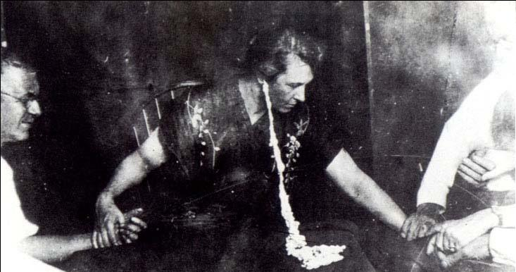

Wednesday, December the 21st, 2011
back to: title, date or indexes
A ghostly paranormal substance that could be doughy, sticky, airy, smoky, or thick and syrupy so far neglected by the Hooting Yard Advent Calendar is… ectoplasm! Today we put that right with this tremendously thrilling photograph of Mina Stinson Crandon, seen here at a séance, exuding ectoplasm from her right ear.

from the Ectoplasm page of the very sensible Studies Of The Paranormal website